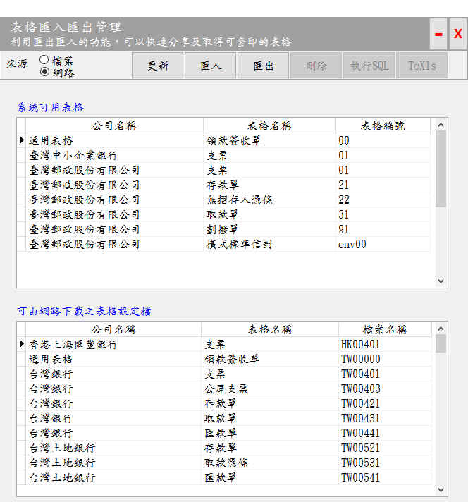

表格引用管理
本軟體在套印任何表格之前，必須建置或取得表格套內容的設定資料，並進行適當的設定(指定印表機，設定列印方向、邊界等相關資料)才能進行套印。
視窗位置：打開軟體 > 表格設計 > 表格匯入匯出管理。
- 匯入表格設定檔:有2種方式可以讓套印軟體取得您想要的表格設定檔
- 檔案匯入：
- 如果您知道有人使用本軟體執行套印，而該表格是您所想要的，那麼只要請對方將設定檔匯出，再匯入您的套印系統即可。
- 請點選「檔案」後，再點選「匯入」，找到您要匯入的表格設定檔之後，再點選「開啟」即可
- 網路匯入:
- 我們的網站已提供數十種表格設定檔，可供使用者自行下載使用。
- 請在「來源」點選「網路」選項後，等待3~10秒，系統會從網站下載「表格設定檔」清單供您挑選，請在「可由網路下載之表格設定檔」點選您想要下載的表格，再點選「匯入」即可
- 匯入後應辦事項:
- 匯入檔案會將您現有的表格設定檔刪除，並不會影響套印軟體中的資料及記錄。
- 並進行適當的設定(指定印表機，設定列印方向、邊界等相關資料)才能進行套印。
- 匯出表格設定檔:如果有其他的人員需要您的表格設定檔時，您可以執行「匯出」以供他人匯入使用，免去重新設定的工作。
- 檔案匯出：
- 可以將表格設定資料匯出供他人使用，請點選「檔案」，再點選您要匯出的表格後，再點選「匯出」即可。
- 此時「表格套印管理系統」資料夾會出現一個ZIP的壓縮檔，並以區域代號、公司代號、表格代號組成檔案名稱，例如臺灣銀行支票其檔名為「TW00401.zip」。
- 自訂表格設定檔：
- 本軟體可由使用者自或系統開發者，新增設計新的表格套印功能。
- 如果您找不到表格的設定檔，又不想自行設定請與我們聯絡，我們會協助您完成表格套印相關設計。
- 詳細操作說明請參考本網站「增加軟體可套印表格」之說明。

表格匯入匯出管理視窗